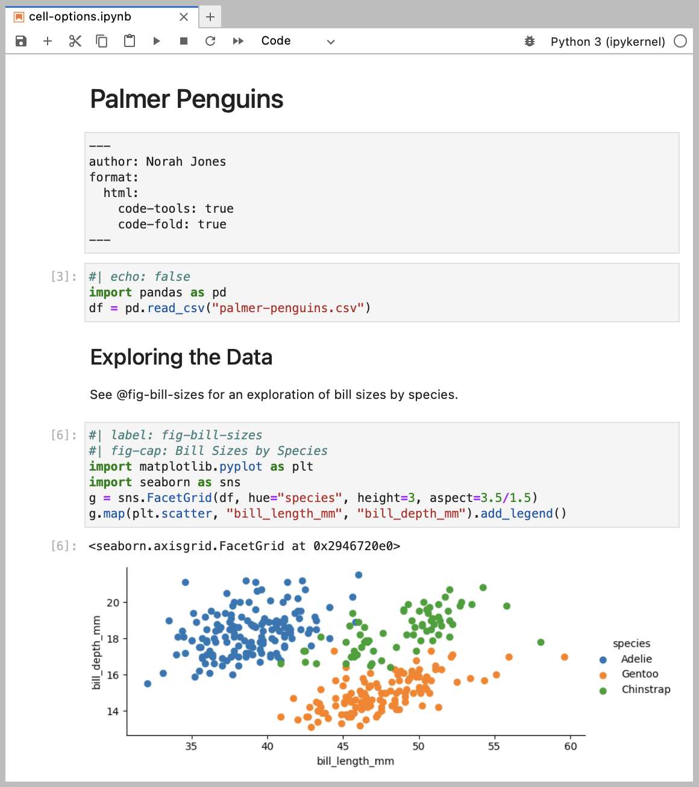
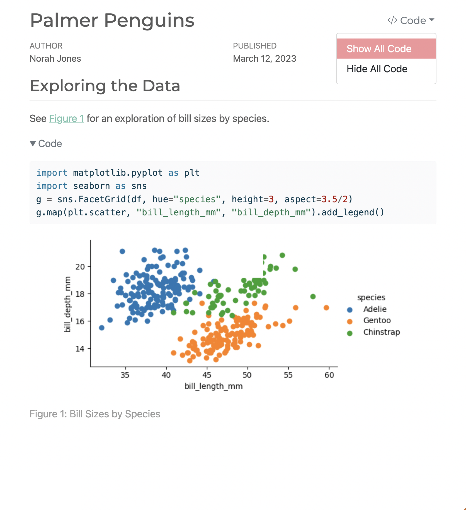
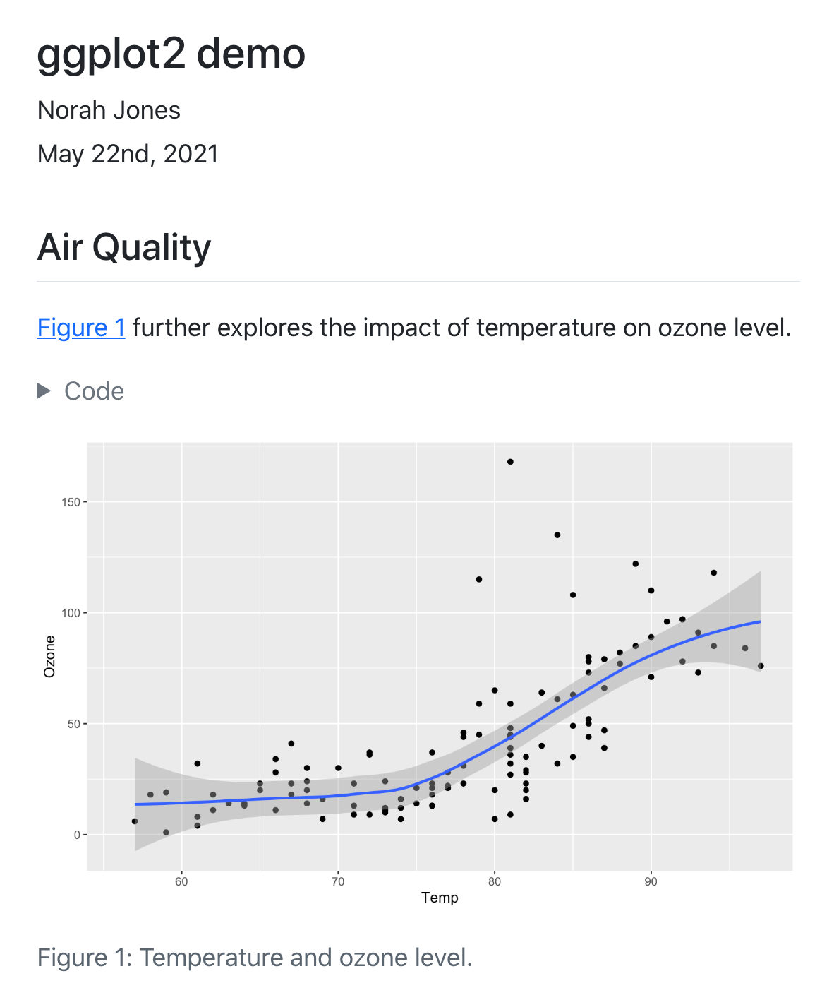
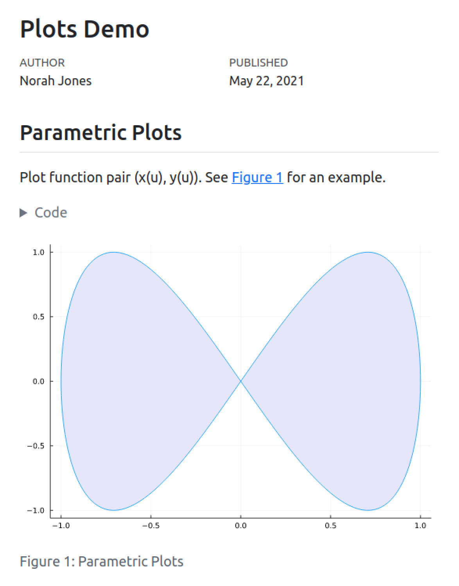

Welcome to Ghassem’s Courses
Hello, Quarto
Combine Jupyter notebooks with flexible options to produce production quality output in a wide variety of formats. Author using traditional notebook UIs or with a plain text markdown representation of notebooks.


Quarto is a multi-language, next generation version of R Markdown from Posit, with many new new features and capabilities. Like R Markdown, Quarto uses knitr to execute R code, and is therefore able to render most existing Rmd files without modification.
---
title: "ggplot2 demo"
author: "Norah Jones"
date: "5/22/2021"
format:
html:
fig-width: 8
fig-height: 4
code-fold: true
---
## Air Quality
@fig-airquality further explores the impact of temperature on ozone level.
```{r}
#| label: fig-airquality
#| fig-cap: "Temperature and ozone level."
#| warning: false
library(ggplot2)
ggplot(airquality, aes(Temp, Ozone)) +
geom_point() +
geom_smooth(method = "loess")
```

Combine markdown and Julia code to create dynamic documents that are fully reproducible. Quarto executes Julia code via the IJulia Jupyter kernel, enabling you to author in plain text (as shown below) or render existing Jupyter notebooks.
---
title: "Plots Demo"
author: "Norah Jones"
date: "5/22/2021"
format:
html:
code-fold: true
jupyter: julia-1.8
---
## Parametric Plots
Plot function pair (x(u), y(u)).
See @fig-parametric for an example.
```{julia}
#| label: fig-parametric
#| fig-cap: "Parametric Plots"
using Plots
plot(sin,
x->sin(2x),
0,
2π,
leg=false,
fill=(0,:lavender))
```

Quarto includes native support for Observable JS, a set of JavaScript enhancements created by Mike Bostock (the author of D3). Observable JS uses a reactive execution model, and is especially well suited for interactive data exploration and analysis.
---
title: "observable plot"
author: "Norah Jones"
format:
html:
code-fold: true
---
## Seattle Precipitation by Day (2012 to 2016)
```{ojs}
data = FileAttachment("seattle-weather.csv")
.csv({typed: true})
Plot.plot({
width: 800, height: 500, padding: 0,
color: { scheme: "blues", type: "sqrt"},
y: { tickFormat: i => "JFMAMJJASOND"[i] },
marks: [
Plot.cell(data, Plot.group({fill: "mean"}, {
x: d => new Date(d.date).getDate(),
y: d => new Date(d.date).getMonth(),
fill: "precipitation",
inset: 0.5
}))
]
})
```
Dynamic Documents
Generate dynamic output using Python, R, Julia, and Observable. Create reproducible documents that can be regenerated when underlying assumptions or data change.
Beautiful Publications
Publish high-quality articles, reports, presentations, websites, and books in HTML, PDF, MS Word, ePub, and more. Use a single source document to target multiple formats.
Scientific Markdown
Pandoc markdown has excellent support for LaTeX equations and citations. Quarto adds extensions for cross-references, figure panels, callouts, advanced page layout, and more.
Interactivity
Engage readers by adding interactive data exploration to your documents using Jupyter Widgets, htmlwidgets for R, Observable JS, and Shiny.
Websites and Books
Publish collections of documents as a blog or full website. Create books and manuscripts in both print formats (PDF and MS Word) and online formats (HTML and ePub).